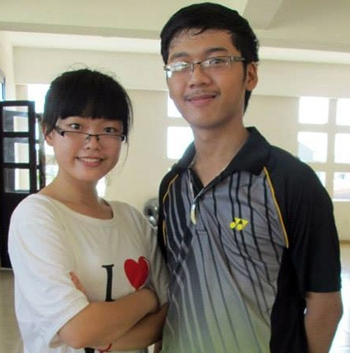
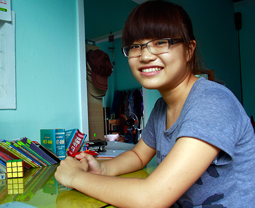

Những thầy thuốc tương lai

Lần cập nhật cuối lúc Thứ ba, 10 Tháng 9 2013 15:06 Viết bởi Thục Anh - Phương Giang Thứ tư, 28 Tháng 8 2013 09:52
Một bạn ở Duy Xuyên, một bạn ở Tiên Phước, nhưng cả hai đều có những điểm chung: học giỏi, đoạt nhiều giải thưởng; cùng thi đỗ vào 2 trường đại học với điểm khá cao và đều chọn học ngành y để trở thành những thầy thuốc tương lai.
Cố gắng trên từng bước đi
Nguyễn Văn Hữu (quê Tiên Phước, cựu học sinh trường THPT Chuyên Nguyễn Bỉnh Khiêm, Tam Kỳ) có bề dày thành tích khá đáng nể: 12 năm liền là học sinh giỏi, lớp 11 đoạt giải Khuyến khích Kỳ thi học sinh giỏi cấp tỉnh môn Toán, giải Nhì cấp tỉnh Kỳ thi giải toán Casio; lớp 12 đoạt giải Nhì môn Toán cấp tỉnh, giải Ba cấp quốc gia môn Toán. Điểm số trong kỳ thi tuyển sinh đại học vừa qua của Hữu cũng khá ấn tượng, thi vào ngành y đa khoa (Đại học Y Dược TP.Hồ Chí Minh) khối B đạt 27 điểm, thi khối A vào trường Đại học Ngoại thương TP.Hồ Chí Minh với số điểm 26,5.

Nguyễn Văn Hữu và bạn đồng môn trường THPT Chuyên Nguyễn Bỉnh Khiêm.
So với một số bạn đồng trang lứa, Hữu có nhiều may mắn khi đời sống kinh tế gia đình khá ổn định, mọi nhu cầu trong học tập đều được ba mẹ đáp ứng. “Nhà có hai anh em, anh trai đã đi làm, nên gần như mình là “giá trị tuyệt đối” trong gia đình. Điều đó vừa khiến mình hạnh phúc nhưng cũng tự cảm thấy là áp lực cho bản thân. Việc duy nhất của em là phải học thật tốt để không phụ lòng trông đợi của ba mẹ” - Hữu cho biết.
Đậu vào Trường THPT chuyên Nguyễn Bỉnh Khiêm, niềm đam mê toán học mà thầy giáo truyền cho trong những năm cấp 2 đã giúp Hữu vượt qua cảm giác “khớp, ngợp” ban đầu. Năm lớp 10 là thời gian nỗ lực không ngừng để Hữu bổ sung những kiến thức còn thiếu hụt, lấy sức cho chặng đua còn lại ở trường chuyên. “Theo mình, là học sinh chuyên Toán thì phải tự nghiên cứu, tự học mới đào sâu, khám phá hết những thú vị từ các con số. Cái nào không hiểu đã có sự trợ giúp của thầy cô” - Hữu chia sẻ bí quyết học Toán. Kỳ thi đại học vừa qua, đỗ cả 2 trường đại học danh tiếng với số điểm khá cao và yêu thích cả hai ngành học, Hữu vẫn xác định: học trở thành bác sĩ. Hữu cho rằng, y khoa sẽ giúp bản thân được thử thách với những cái khó, cái khổ của một ngành khoa học. Hơn nữa, ngành y đang thiếu hụt nhân lực nghiêm trọng, Hữu thực sự muốn đóng góp sức mình phục vụ cho nhu cầu cần thiết của xã hội. Để đi đến con đường đó, Hữu muốn được đào sâu kiến thức y khoa ở môi trường trong nước và sau đó là nước ngoài, có nhiều trải nghiệm cần thiết, đủ tâm - tài - lực sau này hành nghề y.
Bước ra từ làng
Cùng chung ước mơ trở thành thầy thuốc tương lai là cô gái từ làng quê vùng trũng Duy Thành (Duy Xuyên): Mai Lệ Huyền. Hành trang cho Huyền ngày vào Nam nhập học là khẩu hiệu bất biến: “Mọi sự bắt đầu không bao giờ là quá trễ”. Với Huyền, sự học luôn là mới bắt đầu...

Thầy thuốc tương lai Mai Lệ Huyền.
Từng giành giải cao nhất trong các kỳ thi học sinh giỏi môn Tiếng Anh của huyện ở cấp THCS, lọt vào đội chuyên Anh của trường THPT Sào Nam (Duy Xuyên) những năm đầu học phổ thông nhưng cuối cùng, Huyền lại chọn môn Hóa như một cơ duyên. “Một phần vì mình theo học lớp chọn Toán - Lý - Hóa của khối. Phần nữa là do môn Hóa là một môn trong khối thi đại học đã dự định, cộng thêm sự ham thích, tò mò nên mình quyết định tham gia vào đội bồi dưỡng học sinh giỏi môn Hóa của trường” - Huyền tâm sự. Khi quyết định theo học môn Hóa, Huyền không chỉ giành được sự tín nhiệm của cô giáo bồi dưỡng, của bạn bè trong đội mà còn xuất sắc giành giải Nhì môn Hóa trong Kỳ thi học sinh giỏi cấp tỉnh.
Kỳ thi tuyển sinh đại học vừa qua, Huyền dốc hết sức mình cho việc ôn luyện và kết quả là cùng đạt 27 điểm cho cả 2 khối thi, đỗ vào trường Đại học Kinh tế Đà Nẵng lẫn Đại học Y Dược TP.Hồ Chí Minh. Cô tân sinh viên không ngại ngần khi chia sẻ: “Biết ước mơ, dám ước mơ và ước mơ lớn mới có động lực để phấn đấu”. Theo Huyền, “dốt” không phải là vấn đề quá lớn, cái chính là biết mình “dốt” ở chỗ nào, đã cố gắng hết sức chưa, từ đó sẽ rút ra được những kiến thức, bài học riêng cho mình.
Nói về bí quyết thành công trong học tập, Huyền chỉ nghĩ giản đơn vì may mắn sinh ra trong một gia đình hiếu học. Hai chị đang theo học thạc sĩ và đại học, em trai theo gưitnbk.edu.vncũng là học sinh xuất sắc tiêu biểu của trường THCS Chu Văn An. Ngoài việc học, Huyền còn là một gương mặt quen thuộc của các hoạt động Đoàn, Hội do trường tổ chức, từng nhiều lần làm MC tại các cuộc thi trong trường... Thời gian rảnh, Huyền vừa phụ mẹ trông coi hàng tạp hóa, vừa tranh thủ làm việc nhà. Chưa đầy 2 tuần nữa, Huyền sẽ lên đường vào Nam, trở thành tân sinh viên ngành Dược sĩ đại học của trường Đại học Y Dược TP.Hồ Chí Minh. Trong hành trang mang theo của cô học trò bước ra từ làng ấy, là hình ảnh của cô giáo dạy chuyên môn Hóa - Huỳnh Thị Long gọi với theo khi Huyền bước lên xe tham dự kỳ thi học sinh giỏi “Huyền ơi, cố lên nghe!”; là tấm gương của hai người chị, tình thương của ba mẹ, bạn bè nơi vùng quê. Và hơn hết, là ước mơ, với quyết tâm “sự học luôn luôn chỉ là mới bắt đầu”...
THỤC ANH - PHƯƠNG GIANG (Theo Baoquangnam.com.vn)
- 25/01/2014 22:14 - Bí thư Tỉnh ủy Nguyễn Đức Hải chúc mừng trường THP…
- 13/09/2013 14:23 - Khai mạc giải Việt dã truyền thống Báo Quảng Nam m…
- 09/09/2013 08:41 - Ngành Giáo dục Quảng Nam tưng bừng khai giảng năm …
- 05/09/2013 22:12 - Dự lễ khai giảng năm học mới, Bí thư Tỉnh ủy Nguyễ…
- 04/09/2013 06:53 - Phan Thế Hoàng - gương mặt tài năng
- itnbk.edu.vn
- 27/08/2013 13:27 - Chinh phục đam mê
- 26/08/2013 15:10 - 45 mô hình, sản phẩm đạt giải Cuộc thi sáng tạo th…
- 23/08/2013 14:23 - Nữ sinh xứ Quảng vinh danh tại ĐH Harvard
- 23/08/2013 09:40 - Chị em Hiền - Hòa
- 23/08/2013 09:33 - Cho những ngày sau